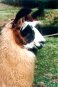
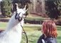
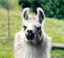
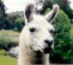
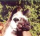

|
(Click on Photo to enlarge)
Beau Bridges was my third addition, he was only four months
old when he arrived at our farm. Because he was my first cria I always called
him Baby...still do:^) Baby is now an intact male 6 years old. He is my wise
old owl and nobody pushes him around. He is very calm and seldom fights but he
makes his presence and wishes known to the other llamas.
When he first arrived it was Pedro that decided to
become his serogate mother. Baby was the only llama that we got as a single
llama, out of the other 6 boys all came with a buddy. I think it made their
adjustment earsier having another llama that they already know.
Also what was interesting about Pedro is that every
llama that came after baby he wanted to beat the crap out of...go figure?
(Click on Photo to enlarge) 
Our 4th and 5th boys were Charlie (left) and Drake (right).
They came together with two other little boys, all were about 6 months old.
They original came from Aryel Llamas and I was supposed to train them so they
could go to new homes. Charlie and Drake never left; they are 6 years old now.
It was also great for baby because they were all in the same age group and he
had other llamas his size to play with.
(Click on Photo to enlarge) 
Our last two are Sparky (left) and Andrew (right). Andrew
was a gift from Aryel llamas. Their owner was out of town when Andrew was born,
and I was watching the farm. Andrew is the first llama I had the pleasure to
help deliver. I was a basket case but everything turned out ok. All the boys
are wonderful and we decided that 7 was just the right size for us. |